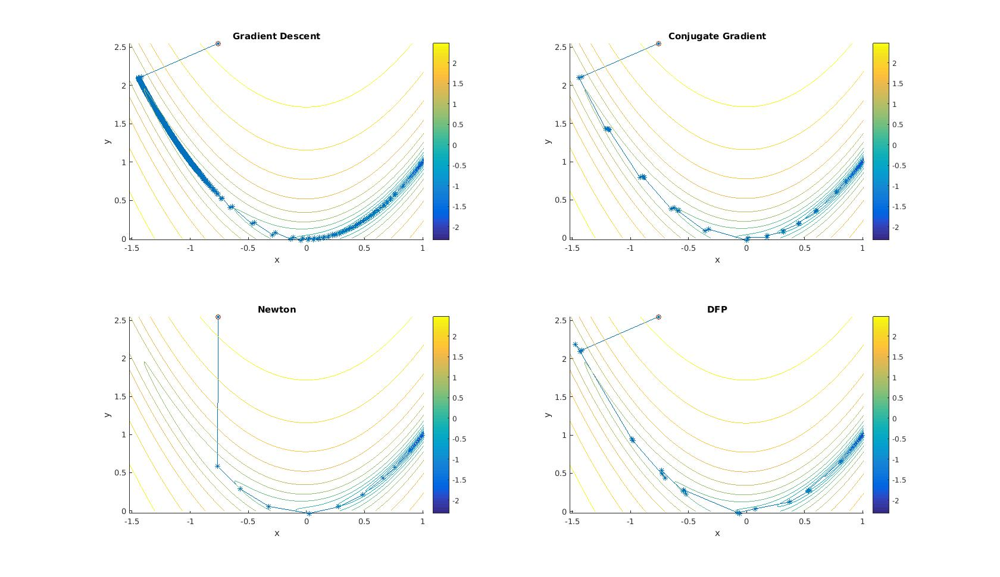
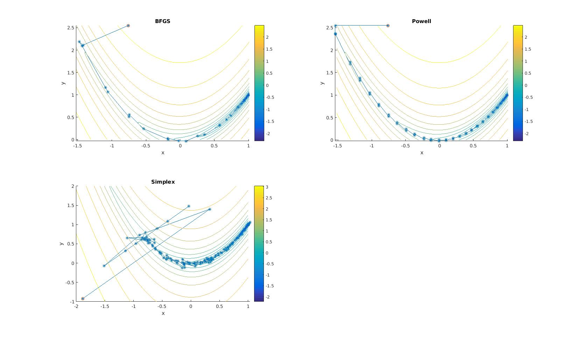

这个 project 是杜建洪老师课程中介绍的优化算法的 c++ 实现。实现了如下算法：
这个 project 使用 CMake 来 build，使用者需要在系统中事先安装 CMake，程序是在 ubuntu 操作系统下编写与测试，在 g++ 4.8 版本编译器与clang 3.7 中编译测试成功。CMake 也可以生成 Windows 下 Visual Studio 的工程文件，具体的使用请参考 CMake 手册。
使用者可以使用如下方式来编译：
cd /path/to/this/project/src
mkdir out_build
cd out_build
cmake ..
make
cd ..要安装 CMake，在 ubuntu 系统中，可以直接 sudo apt-get install cmake 来执行，在 Windows 系统中，可以去网站下载安装包。在其他系统中，可以查看 CMake 网站相关帮助。
在运行 cmake .. 命令时，可以通过下列的两个命令行选项来控制程序的行为：
-DWRITE_LOG=ON/OFF，是否在优化时对每个点进行记录，如果为 OFF 则只记录最终的最优点-DDEBUG_OPTIMIZER=ON/OFF，是否开启debug模式，如果为 ON，则会使用统一的随机数发生器种子，这样保证每次运行，都得到相同的结果。许多算法都需要矩阵运算，在 project 中，矩阵运算调用 Eigen 实现
这个 project 关注的重点在算法运行的迭代次数。因此，并没对算法运行时采用的数据结构进行优化。
用来表示函数输入参数、函数返回结果、以及待优化函数的数据类型定义如下：
// Input parameter for objective function
typedef std::vector<double> Paras;
// Result evaluated by objective function
class Solution { // Para与evaluated result放在一个class中，方便(partial) sort
Paras _solution;
std::vector<double> _violation; // sum of constraint violation
double _fom;
public:
Solution(const Paras& s, const std::vector<double>& cv, double fom) noexcept;
Solution() =delete;
double fom() const noexcept;
double sum_violation() const noexcept;
const std::vector<double>& violations() const noexcept;
const Paras& solution() const noexcept;
Solution& operator=(const Solution&) =default;
bool operator<(const Solution& s) const noexcept
{
return _fom < s.fom();
}
bool operator<=(const Solution& s) const noexcept
{
return _fom <= s.fom();
}
};
// type signature of objective function
typedef std::function<Solution(const Paras&)> ObjFunc;使用std::vector<double>来表示待优化函数的输入参数，并将其typedef为Paras。
将输入参数、目标函数的值fom，以及约束violation打包成一个class Solution，这样会带来额外的拷贝开销，但好处是编程时更加方便，比如，可以很方便的对一组函数的解进行 排序，选出最好或者最差的解，如果把输入参数跟目标函数输出分开存储，则如果要对目标函数的解进行排序，则需要额外处理输入参数与目标函数输出的同步问题。
对于目标函数的表示，我采用了 c++11 中函数式编程的特性。在 c++11 中，可以用 lambda expression 来表示一个函数，这样表示的函数可以作为数据处理，可以作为另一个函数的输入参数，也可以作为一个函数的返回值。在这个 project 中，目标函数表示为一个输入为const Paras&，输出类型为Solution的函数。这个函数由用户定义，并作为 optimizer 的构造函数的一个参数。
一维函数优化是优化算法的基本，即使是多元函数，在确定了下一步搜索方向之后，也往往在搜索方向上进行线搜索（line search），在这个 project 中，实现了 Fibonacci 法，黄金分割法和外推这三个优化算法。
首先定义一维函数优化的基类:
class Optimizer1D
{
protected:
ObjFunc _func;
public:
Optimizer1D(ObjFunc func) noexcept : _func(func) {}
virtual Solution optimize() noexcept = 0;
};Optimizer1D 的构造函数接受一个 ObjFunc 类型，ObjFunc 即上一节介绍过的表示目标函数的类型，这里的目标函数必须是一维函数，否则，程序可能会出错。
Optimizer1D::optimize()是一个纯虚类，所有继承 Optimizer1D 类的派生类都需要实现这个方法，具体的一维优化算法就实现在这里。
Fibonacci 法的类型声明如下:
class FibOptimizer : public Optimizer1D
{
const double _lb;
const double _ub;
const size_t _iter;
public:
FibOptimizer(ObjFunc f,double lb,double ub,size_t iter) noexcept;
Solution optimize() noexcept;
~FibOptimizer() {}
};Fibonacci 法需要提供一个一维目标函数，同时，需要提供搜索的下界与上界，Fibonacci 最终的精度随迭代次数指数下降，因此还需要提供一个迭代次数，设置迭代次数默认为 16。
Fibonacci 的基本思路是，希望在区间 \([a_1,a_2]\) 内寻找函数 \(f\) 的最小值，则在 \([a_1, a_2]\) 内找两个点 \(a_3\) 与 \(a_4\) ，分别计算 \(y_3 = f(a_3)\) 与 \(y_4 = f(a_4)\) ，比较 \(y_3\) 与 \(y_4\) 的值，若 \(y_3 < y_4\)，则说明最小值在 \([a_1, a_4]\) 区间内，若 \(y_3 > y_4\), 则说明最小值在 \([a_3, a_2]\) 区间内，然后依此递归。
Fibonacci 法靠 Fibonacci 数列来确定 \(a_3\) 与 \(a_4\) 的值，因为迭代次数 \(iter\) 已经确定，因此可以事先计算出从 0 到 \(iter\) 的 Fibonacci 数列，对于第 i 次迭代（从 0 开始），计算 \(r=\tfrac{F_{iter-1-i}}{F_{iter-i}}\)，然后，令 \(a3 = a2 - r (a2 - a1)\)，令 \(a4 = a1 + r (a2 - a1)\)。 Fibonacci 法实现代码如下:
Solution FibOptimizer::optimize() noexcept
{
// 1-D function
double a1 = _lb;
double a2 = _ub;
if (a1 > a2)
{
cerr << "Range error" << endl;
exit(EXIT_FAILURE);
}
vector<double> fib_list{1, 1};
if (_iter > 2)
{
for (size_t i = 2; i < _iter + 1; ++i)
fib_list.push_back(fib_list[i - 1] + fib_list[i - 2]);
}
double y1, y2;
for(size_t i = 0; i < _iter - 1; ++i)
{
const double f1 = fib_list[_iter - 1 - i];
const double f2 = fib_list[_iter - i];
const double rate = f1 / f2;
const double a3 = a2 - rate * (a2 - a1);
const double a4 = a1 + rate * (a2 - a1);
const double y3 = _func({a3}).fom();
const double y4 = _func({a4}).fom();
if (y3 < y4)
{
a2 = a4;
y2 = y4;
}
else
{
a1 = a3;
y1 = y3;
}
}
return _func({a1});
}黄金分割法的类型声明如下，其类型声明以与 Fibonacci 法一致。
class GoldenSelection : public Optimizer1D
{
const double _lb;
const double _ub;
const size_t _iter;
public:
GoldenSelection(ObjFunc f,
double lb,
double ub,
size_t iter = 16) noexcept;
Solution optimize() noexcept;
~GoldenSelection() {}
};黄金分割法的优化算法实现如下，它的思路与 Fibonacci 法一致，不同的是它使用黄金分割数 0.618 作为固定的区间收缩比例。
Solution GoldenSelection::optimize() noexcept
{
// 1-D function
// function shoulde be convex function
double a1 = _lb;
double a2 = _ub;
if (a1 > a2)
{
cerr << "Range error" << endl;
exit(EXIT_FAILURE);
}
const double rate = (sqrt(5) - 1) / 2;
double y1, y2;
for (size_t i = _iter - 1; i > 0; --i)
{
const double interv_len = a2 - a1;
const double a3 = a2 - rate * interv_len;
const double a4 = a1 + rate * interv_len;
if (a3 == a4)
break;
else
{
assert(a3 < a4);
const double y3 = _func({a3}).fom();
const double y4 = _func({a4}).fom();
if (y3 < y4)
{
a2 = a4;
y2 = y4;
}
else
{
a1 = a3;
y1 = y3;
}
}
}
return y1 < y2 ? _func({a1}) : _func({a2});
}黄金分割法与 Fibonacci 法都需要事先知道最优点的范围，而外推法则可以适用于最优点范围不知道的情况，它先寻找一个最优点的范围，然后再去调用其他优化算法，比如黄金分隔法或二次插值法在找到的范围内进行优化。
下面是外推法的类声明以及算法实现：
class Extrapolation : public Optimizer1D
{
const Paras _init;
const double _min_len; // min extrapolation step
const double _max_len; // max extrapolation step
public:
Extrapolation(ObjFunc f,
Paras i,
double min_len,
double max_len
) noexcept;
Solution optimize() noexcept;
~Extrapolation() {}
};
Solution Extrapolation::optimize() noexcept
{
// 1-D function
double step = _min_len;
double x1 = _init[0];
double x2 = x1 + step;
double y1 = _func({x1}).fom();
double y2 = _func({x2}).fom();
double lb = x1;
double ub = x1 + _max_len;
if (y2 > y1)
{
step *= -1;
ub = x1 - _min_len;
lb = x1 - _max_len;
x2 = x1 + step;
y2 = _func({x2}).fom();
if (y2 > y1) return _func({x1});
}
double factor = 2;
double x3 = x2 + factor * step;
double y3 = _func({x3}).fom();
double xa, xc;
double ya, yc;
if (y3 > y2)
{
xa = x1;
xc = x3;
ya = y1;
yc = y3;
}
else
{
while (y3 < y2 && (lb < x3 && x3 < ub))
{
factor *= 2;
x3 += factor * step;
if (x3 >= ub) x3 = ub;
if (x3 <= lb) x3 = lb;
y3 = _func({x3}).fom();
}
double xtmp1 = x3 - factor * step;
double xtmp2 = x3 - (factor / 2) * step;
double ytmp1 = _func({xtmp1}).fom();
double ytmp2 = _func({xtmp2}).fom();
if (ytmp1 < ytmp2)
{
xa = x2;
xc = xtmp2;
ya = y2;
yc = ytmp2;
}
else
{
xa = xtmp1;
xc = x3;
ya = ytmp1;
yc = y3;
}
}
if (xa > xc)
{
std::swap(xa, xc);
std::swap(ya, yc);
}
const double len = xc - xa;
const size_t gso_iter = 2 + (log10(_min_len / len) / log10(0.618));
return GoldenSelection(_func, xa, xc, gso_iter).optimize();
}上一节实现的一维优化算法，都是期望找到在搜索方向上的最优点。但是，很多时候，找到严格意义上的最优点，往往需要很多次迭代; 而且, 因为搜索方向上的最优点并不是多元函数的最优点，在多元函数优化过程中，找到搜索方向上的最优点也没有必要。只要保证步长使得函数在搜索方向上下降足够多就可以了。因此，在实际的多元函数优化中，当需要确定在搜索方向上的步长时，常常并不采用精确的一元函数优化算法，而是规定一个“在搜索方向上足够下降”的标准，然后只要找到满足这样标准的点即可。
Strong wolfe condition 是一个常用的不精确线搜索的判据，其判据如下：
\[ \left\{ \begin{array}{lll} f(x_k + \alpha_k p_k)&\leq&f(x_k) + c_1 \alpha_k \nabla f_k^T p_k\\ |\nabla f(x_k + \alpha_k p_k)^T p_k|&\leq&c_2 |\nabla f_k^T| \end{array} \right. \]
在上式中，\(c_1\) 与 \(c_2\) 满足 \(0<c_1<c_2<1\)，其中，第一个不等式被称作 sufficient decrease condition，第二个不等式被称作 curvature condition。如果步长满足 sufficient decrease condition，则说明在步长处，函数已经有了足够的下降，而 curvature condition 则是要求函数在搜索方向上的梯度也有足够大的下降，因为很显然，如果在步长处函数的梯度仍然很大，则说明在这个方向上仍有进一步改变步长的余地。
Figure 1 是 strong wolfe condition 的一个例子，对于图中一维函数，只要最终步长选在位于"acceptable"的区间内即可。
本次 project 实现了寻找满足 strong wolfe condition 的搜索步长的算法，其基本思路是，先通过插值与外推的方法，尝试一系列递增的 trial step，找到一个满足 strong wolfe condition 的区间。再在这个区间内，进行二次或三次插值，直到找到满蓄 strong wolfe condition 的步长。
Strong wolfe condition 不精确线搜索算法代码，可以去 src/Optimizer/StrongWolfe.cpp 中查看。
首先定义了两个基类，MultiDimOptimizer 与 GradientMethod，其中，MultiDimOptimizer 是一切多元函数优化算法的基类，在其中定义了一些辅助性质的成员变量与函数，如函数维度、最大迭代次数，最大与最小步长等。
GradientMethod 是MultiDimOptimizer 的一个派生类，它是所有基于梯度法的算法的基类，包括梯度下降法、共轭梯度法、牛顿法和拟牛顿法。
在 GradientMethod 中定义了一些与梯度有关的变量与函数，如求梯度的GradientMethod::get_gradient，求 Hessian 矩阵的 GradientMethod::hessian，这两个函数都是虚函数，可以被派生类重载。MultiDimOptimizer 中还定义了一些与梯度相关的成员变量，如用数值法求梯度时用到的 _epsilon。以及判定收敛（梯度为零）的最小梯度等。
class MultiDimOptimizer
{
protected:
const size_t _dim;
const size_t _max_iter;
const double _min_walk;
const double _max_walk;
const std::string _func_name;
const std::string _algo_name;
std::ofstream _log;
virtual Solution run_func(const Paras&) noexcept;
virtual Solution run_line_search(
const Solution& s,
const Eigen::VectorXd& direction
) noexcept;
private:
ObjFunc _func;
StrongWolfe _line_searcher;
size_t _eval_counter;
size_t _linesearch_counter;
public:
void clear_counter() noexcept
{
_eval_counter = 0;
_linesearch_counter = 0;
}
size_t eval_counter() noexcept { return _eval_counter; }
size_t linesearch_counter() noexcept
{
return _linesearch_counter;
}
MultiDimOptimizer(
ObjFunc f,
size_t d,
size_t max_iter,
double min_walk,
double max_walk,
std::string func_name,
std::string algo_name) noexcept;
virtual ~MultiDimOptimizer(){}
};
class GradientMethod : public MultiDimOptimizer
{
protected:
const Paras _init;
const double _epsilon; // use _epsilon to calc gradient
const double _zero_grad; // threshold for zero gradient
virtual Eigen::VectorXd get_gradient(const Solution& s) noexcept;
virtual Eigen::MatrixXd hessian(
const Solution& point,
const Eigen::VectorXd& grad
) noexcept;
public:
GradientMethod(
ObjFunc f,
size_t d,
Paras i,
double epsi,
double zgrad,
double minwalk,
double maxwalk,
size_t max_iter,
std::string fname,
std::string aname) noexcept;
virtual ~GradientMethod() { if(_log.is_open()) _log.close(); }
};梯度下降法假定函数在搜索域内总是一阶可导，对一个函数 \(f\)，给定一个初始点\(~x_k\)，梯度\(~g_k=\nabla f(x_k)\)，则搜索方向\(~d_k=-g_k\)，当梯度为零时判定收敛，此时，找到了函数在这个区域的极小值。
梯度下降法算法描述如下：
梯度下降法实现代码如下：
Solution GradientDescent::optimize() noexcept
{
clear_counter();
_log << _func_name << endl;
Solution sol = run_func(_init);
VectorXd grad = get_gradient(sol);
double grad_norm = grad.lpNorm<2>();
double len_walk = numeric_limits<double>::infinity();
while (grad_norm > _zero_grad
&& eval_counter() < _max_iter
&& len_walk > _min_walk)
{
// LOG is a macro used to record evaluated function input
LOG(sol, grad);
const Solution new_sol = run_line_search(sol, -1 * grad);
len_walk = vec_norm(new_sol.solution() - sol.solution());
sol = new_sol;
grad = get_gradient(sol);
grad_norm = grad.lpNorm<2>();
}
_log << "=======================================" << endl;
write_log(sol, grad);
_log << "len_walk: " << len_walk << endl;
_log << "eval: " << eval_counter() << endl;
_log << "line search: " << linesearch_counter() << endl;
if (eval_counter() >= _max_iter)
_log << "max iter reached" << endl;
return sol;
}当目标函数在极值点附近的条件数（即 Hessian 矩阵最大特征值与最小特征值之比）过大时，梯度下降法在极值点附近会出现来回折叠现象，导致收敛较慢。共轭梯度法（Conjugate Gradient Method）可以克服这种问题，它选择共轭梯度方向作为搜索方向。
可以证明，如果目标函数在极值点附近是二次的，对于 N 维函数，则只需要 N 次一维查找，就可以找到极值点。当然上面的一维查找指的是精确的一维查找。如果使用不精确一维查找或者问题的阶数高于二阶，N 维问题需要的查找次数会大于N。
对于一个 N 维矩阵 \(A\)，如果向量 \(u\)，\(v\)，满足 \(u^T A v = 0\)，则这两个向量对于矩阵 \(A\) 共轭。N维空间中，共有N个互相共轭的向量。共轭梯度法第一步以梯度方向为搜索方向，而后每一步的搜索方向都与之前的搜索方向互相共轭，如此搜索 N 步。如果 N 步之后，仍然没有找到极值点。则再以梯度方向为搜索方向，再搜索 N 步。如此循环，直至找到极值点。
共轭梯度法算法描述如下:
共轭梯度法的实现代码如下:
Solution ConjugateGradient::optimize() noexcept
{
clear_counter();
_log << _func_name << endl;
Solution sol = run_func(_init);
VectorXd grad = get_gradient(sol);
VectorXd conj_grad = grad;
double grad_norm = grad.lpNorm<2>();
double len_walk = numeric_limits<double>::infinity();
assert(sol.solution().size() == _dim);
while (grad_norm > _zero_grad &&
eval_counter() < _max_iter &&
len_walk > _min_walk)
{
conj_grad = grad;
for (size_t i = 0; i < _dim; ++i)
{
LOG(sol, grad, conj_grad);
const Solution new_sol = run_line_search(
sol,
-1 * conj_grad);
VectorXd new_grad = get_gradient(new_sol);
double beta = pow(new_grad.lpNorm<2>()/grad.lpNorm<2>(),2);
len_walk = vec_norm(new_sol.solution() - sol.solution());
sol = new_sol;
conj_grad = new_grad + beta * conj_grad;
grad = new_grad;
grad_norm = grad.lpNorm<2>();
if (!(grad_norm > _zero_grad)) break;
}
}
_log << "=======================================" << endl;
write_log(sol, grad, conj_grad);
_log << "len_walk: " << len_walk << endl;
_log << "eval: " << eval_counter() << endl;
_log << "line search: " << linesearch_counter() << endl;
if (eval_counter() >= _max_iter)
_log << "max iter reached" << endl;
return sol;
}梯度下降法与共轭梯度法都是利用函数的梯度，而牛顿法利用函数的二阶导（Hessian 矩阵），因而能够达到比梯度下降法与共轭梯度法更快的收敛速度。
牛顿法算法描述如下：
牛顿法的实现代码如下:
Solution Newton::optimize() noexcept
{
clear_counter();
_log << "func: " << _func_name << endl;
Solution sol = run_func(_init);
VectorXd grad = get_gradient(sol);
MatrixXd hess = hessian(sol, grad);
double grad_norm = grad.lpNorm<2>();
double len_walk = numeric_limits<double>::infinity();
while (grad_norm > _zero_grad &&
eval_counter() < _max_iter &&
len_walk > _min_walk)
{
VectorXd direction = -1*hess.colPivHouseholderQr().solve(grad);
double judge = grad.transpose() * direction;
double dir = judge < 0 ? 1 : -1;
LOG(sol, grad, hess);
direction *= dir;
Solution new_sol = run_line_search(sol, direction);
len_walk = vec_norm(new_sol.solution() - sol.solution());
sol = new_sol;
grad = get_gradient(sol);
hess = hessian(sol, grad);
grad_norm = grad.lpNorm<2>();
}
_log << "=======================================" << endl;
write_log(sol, grad, hess);
_log << "len_walk: " << len_walk << endl;
_log << "iter: " << eval_counter() << endl;
_log << "line search: " << linesearch_counter() << endl;
_log << "eigenvalues of hess: " << endl
_log << hess.eigenvalues() << endl;
if (eval_counter() >= _max_iter)
_log << "max iter reached" << endl;
return sol;
}Newton 法是二阶收敛，因此在理论上会比梯度法更快。但是如果目标函数无法直接给出 Hessian 矩阵，则要用有限差分的方法近似 Hessian 矩阵。对于N维的问题，其复杂度为 \(O(N^2)\)，当目标函数的维度上升时，求 Hessian 矩阵的代价就会变得不可接受。拟牛顿法（Quasi-Newton Method）通过迭代的方法，来近似 Hessian 矩阵。常见的拟牛顿法有 DFP 法与 BFGS 法。
在牛顿法迭代过程中，Hessian 矩阵满足如下关系:
\[ g_{k+1} - g_k = H_k (x_{k+1} - x_k) \]
记 \(y_k = g_{k+1} - g_k\)，\(\delta_k = x_{k+1} - x_k\)，则:
\[ y_k = H_k \delta_k \]
或者:
\[ \delta_k = H_k^{-1} y_k \]
上面两式称作拟牛顿条件。如果 \(H_k\) 是正定的，则搜索方向 \(d_k = -H_k g_k\) 是一个下降方向。
选定初始的正定矩阵 \(G_0\)，对于空间中点 \(x_k\)，其梯度 \(g_k\)
对 DFP 法，G 矩阵如此确定
\[ G_{k+1} = G_k + \frac{\delta_k \delta_k^T}{\delta_k^T y_k} - \frac{G_k y_k y_k^T G_k}{y_k^T G_k y_k} \]
对BFGS
\[ \left\{ \begin{array}{lll} \mu_k & = & 1 + \frac{y_k^TH_ky_k}{\delta_ky_k}\\ G_{k+1} & = & G_k + \frac{\mu_k\delta_k\delta_k^T - H_ky_k\delta_k^T - \delta_ky_k^TH_k}{\delta_k^T y_k}\\ \end{array} \right. \]
搜索方向 \[d_k = -H_k g_k\]
BFGS法的实现代码如下:
Solution BFGS::optimize() noexcept
{
clear_counter();
_log << "func: " << _func_name << endl;
Solution sol = run_func(_init);
VectorXd grad = get_gradient(sol);
MatrixXd quasi_hess = MatrixXd::Identity(_dim, _dim);
double grad_norm = grad.lpNorm<2>();
double len_walk = numeric_limits<double>::infinity();
while (grad_norm > _zero_grad && eval_counter() < _max_iter &&
len_walk > _min_walk)
{
LOG(sol, grad, quasi_hess);
const VectorXd direction =
-1 * (quasi_hess.colPivHouseholderQr().solve(grad));
const Solution new_sol = run_line_search(sol, direction);
const VectorXd new_grad = get_gradient(new_sol);
const vector<double> delta_x =
new_sol.solution() - sol.solution();
const VectorXd ev_dg = new_grad - grad;
const Map<const VectorXd> ev_dx(&delta_x[0], _dim, 1);
len_walk = vec_norm(delta_x);
if (len_walk > 0)
{
quasi_hess +=
(ev_dg * ev_dg.transpose()) /
(ev_dg.transpose() * ev_dx) -
(quasi_hess * ev_dx * ev_dx.transpose() *
quasi_hess) /
(ev_dx.transpose() * quasi_hess * ev_dx);
sol = new_sol;
grad = new_grad;
grad_norm = grad.lpNorm<2>();
}
}
_log << "=======================================" << endl;
write_log(sol, grad, quasi_hess);
_log << "len_walk: " << len_walk << endl;
_log << "eval: " << eval_counter() << endl;
_log << "line search: " << linesearch_counter() << endl;
if (eval_counter() >= _max_iter)
_log << "max iter reached" << endl;
return sol;
}DFP法的实现代码如下：
Solution DFP::optimize() noexcept
{
clear_counter();
_log << "func: " << _func_name << endl;
Solution sol = run_func(_init);
VectorXd grad = get_gradient(sol);
double grad_norm = grad.lpNorm<2>();
double len_walk = numeric_limits<double>::infinity();
MatrixXd quasi_hess_inverse = MatrixXd::Identity(_dim, _dim);
while (grad_norm > _zero_grad && eval_counter() < _max_iter &&
len_walk > _min_walk)
{
LOG(sol, grad, quasi_hess_inverse);
VectorXd dvec = -1 * (quasi_hess_inverse * grad);
#ifdef WRITE_LOG
const double judge = grad.transpose() * dvec;
_log << "judge: " << judge << endl;
if (judge > 0) _log << "judge greater than zero" << endl;
#endif
const Solution new_sol = run_line_search(sol, dvec);
const VectorXd new_grad = get_gradient(new_sol);
const vector<double> delta_x =
new_sol.solution() - sol.solution();
const VectorXd ev_dg = new_grad - grad;
len_walk = vec_norm(delta_x);
const Map<const VectorXd> ev_dx(&delta_x[0], _dim, 1);
if (len_walk > 0)
{
quasi_hess_inverse +=
(ev_dx * ev_dx.transpose()) /
(ev_dx.transpose() * ev_dg) -
(quasi_hess_inverse * ev_dg * ev_dg.transpose() *
quasi_hess_inverse) /
(ev_dg.transpose() * quasi_hess_inverse * ev_dg);
sol = new_sol;
grad = new_grad;
grad_norm = grad.lpNorm<2>();
}
}
_log << "=======================================" << endl;
write_log(sol, grad, quasi_hess_inverse);
_log << "len_walk: " << len_walk << endl;
_log << "eval: " << eval_counter() << endl;
_log << "line search: " << linesearch_counter() << endl;
if (eval_counter() >= _max_iter)
_log << "max iter reached" << endl;
return sol;
}算法参数:
单纯形法算法描述如下:
单纯形法实现的代码如下：
double NelderMead::update_sols(size_t idx,
const Solution& new_sol) noexcept
{
assert(_sols.size() == _dim + 1);
assert(idx <= _dim);
const double walk_len =
vec_norm(new_sol.solution() - _sols[idx].solution());
_sols[idx] = new_sol;
return walk_len;
}
Solution NelderMead::optimize() noexcept
{
clear_counter();
_log << _func_name << endl;
_sols.clear();
_sols.reserve(_dim + 1);
for (size_t i = 0; i < _dim + 1; ++i)
_sols.push_back(run_func(_inits[i]));
double walk_len = numeric_limits<double>::infinity();
while (eval_counter() < _max_iter && walk_len > _min_walk)
{
// 1. order
std::sort(_sols.begin(), _sols.end(), std::less<Solution>());
const Solution& worst = _sols[_dim];
const Solution& sec_worst = _sols[_dim - 1];
const Solution& best = _sols[0];
// 2. centroid calc
Paras centroid(_dim, 0);
for (size_t i = 0; i < _dim; ++i)
centroid = centroid + _sols[i].solution();
centroid = 1.0 / static_cast<double>(_dim) * centroid;
// 3. reflection
Solution reflect = run_func(
centroid + _alpha * (centroid - worst.solution()));
LOG(reflect);
if (best <= reflect && reflect < sec_worst)
{
walk_len = update_sols(_dim, reflect);
}
else if (reflect < best) // 4. expansion
{
Solution expanded = run_func(
centroid + _gamma * (reflect.solution() - centroid));
LOG(expanded);
const Solution& new_sol =
expanded < reflect ? expanded : reflect;
walk_len = update_sols(_dim, new_sol);
}
else // 5. contract
{
assert(!(reflect < sec_worst));
Solution contracted = run_func(
centroid + _rho * (worst.solution() - centroid));
LOG(contracted);
if (contracted < worst)
{
walk_len = update_sols(_dim, contracted);
}
else // 6. shrink
{
#ifdef WRITE_LOG
_log << "shrink: " << endl;
#endif
walk_len = 0;
for (size_t i = 1; i < _dim + 1; ++i)
{
Paras p = best.solution() -
_sigma * (_sols[i].solution() -
best.solution());
double tmp_walk = update_sols(i, run_func(p));
walk_len = max(tmp_walk, walk_len);
LOG(_sols[i]);
}
}
}
}
std::sort(_sols.begin(), _sols.end(), std::less<Solution>());
_log << "=========================================" << endl;
write_log(_sols[0]);
return _sols[0];
}鲍威尔法的实现代码如下：
Solution Powell::optimize() noexcept
{
clear_counter();
Solution sol = run_func(_init);
double walk_len = numeric_limits<double>::infinity();
// initial search directions are axes
vector<VectorXd> search_direction(_dim, VectorXd(_dim));
for (size_t i = 0; i < _dim; ++i)
{
for (size_t j = 0; j < _dim; ++j)
search_direction[i][j] = i == j ? 1.0 : 0.0;
}
while (eval_counter() < _max_iter && walk_len > _min_walk)
{
double max_delta_y = -1 * numeric_limits<double>::infinity();
size_t max_delta_id;
Paras backup_point = sol.solution();
for (size_t i = 0; i < _dim; ++i)
{
LOG(sol);
Solution search_sol =
run_line_search(sol, search_direction[i]);
if (sol.fom() - search_sol.fom() > max_delta_y)
{
max_delta_y = sol.fom() - search_sol.fom();
max_delta_id = i;
}
sol = search_sol;
}
Paras new_direc = sol.solution() - backup_point;
VectorXd new_direc_vxd = Map<VectorXd>(&new_direc[0], _dim);
walk_len = new_direc_vxd.lpNorm<2>();
search_direction[max_delta_id] = new_direc_vxd;
}
_log << endl
<< "==========================================" << endl;
write_log(sol);
return sol;
}使用 Rosenbrock 函数来比较不同优化算法的性能。Rosenbrock 函数如下定义：
\[ f(x, y) = (1-x)^2 + 100 * (y - x^2)^2 \]
Figure 2 为 Rosenbrock 函数的等高线图，为增强显示效果，图中函数值对 10 取对数，即 \(val = \log_{10}f(x, y)\)
将 \((-0.76, 2.55)\) 设为初始点 （单纯形法除外，单纯形法初始需要 N + 1 个点，N 为维度），程序运行结果以及图示见下表以及下图。其中 NumLineSearch 表示程序做一维搜索的次数，即为图上点的数量。而对于梯度法以及鲍威尔法，确定搜索方向后，要找到下一个点，还需要在一维搜索上话费数次函数执行，表中 NumEvaluation 一列表示算法优化过程中实际的函数执行次数。可以看出，梯度下降法表现最差，而单纯形法表现最好。
需要说明的是，表中数据只是不同算法对 Rosenbrock 函数以及 \((-0.76, 2.55)\) 这一个初始点的性能，换一个比较函数，换一个初始点，都可能会有不同的结果。
| Algorithm | Fom | NumLineSearch | NumEvaluation |
|---|---|---|---|
| GradientDescent | 1.42e-4 | 639 | 6516 |
| ConjugateGradient | 5.29e-9 | 48 | 694 |
| Newton | 1.01e-5 | 11 | 200 |
| DFP | 2.68e-6 | 25 | 367 |
| BFGS | 3.82e-6 | 29 | 430 |
| Simplex | 2.44e-11 | 0 | 170 |
| Powell | 9.46e-11 | 70 | 739 |
 